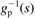
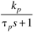
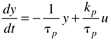
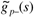
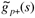
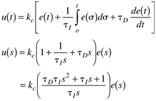
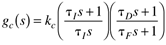

A | Jacobian | state space—relates states to the state derivatives |
B | input matrix | state space—relates inputs to state derivatives |
C | output matrix | state space—relates states to outputs |
D | | state space—direct transmittance from inputs to outputs |
e | error | setpoint—measured process output |
l | load (disturbance) input | |
p | pole | roots of the denominator polynomial of gp(s); equal to the eigenvalues of A |
r | setpoint | desired value of the output |
s | Laplace domain variable | when used in frequency-response techniques, set s = jw |
x | state variable | |
y | output variable | measured output (also known as the controlled variable or process variable) |
u | manipulated input | also known as the controller output |
z | zero | roots of the numerator polynomial of gp(s) equal to the poles of  |
gp(s) | process transfer function | y(s) = gp(s) u(s)
gp(s) = C(sI – A)-1B+D |
 | first-order transfer function, gp(s) |  |
gc(s) | controller transfer function | |
gd(s) | disturbance transfer function | |
gm(s) | measurement transfer function | |
gv(s) | valve transfer function | |
kp | process gain | change in output/change in input |
tp | process time constant | first-order system time constant |
q | process time delay | |
z | damping factor | used for unfactored second-order systems |
kc | proportional gain | PID controller tuning parameter |
tI | integral time constant | PID controller tuning parameter |
tD | derivative time constant | PID controller tuning parameter |
tF | filter time constant | |
~ | indicates model | superscript |
 | "good stuff" portion of process model | inverse is used for internal model controller |
 | "bad stuff" portion of process model | contains time-delays and RHP zeros |
q(s) | internal model controller | |
f(s) | IMC filter | used to make q(s) physically realizable (proper) |
l | filter factor, closed-loop time constant | tuning parameter for internal model controllers |
l | eigenvalue | roots of det(lI – A) |
lij | relative gain | relative gain between output i and input j |
CLTF | closed-loop transfer function | |
GM | gain margin | indication of "gain uncertainty" that can be tolerated |
IMC | internal model control | can be either implemented in the IMC structure or rearranged to "standard feedback form" to design a PID controller (IMC-based PID) |
MIMO | multi-input, multi-output | |
MPC | model predictive control | optimization of control moves over a future prediction horizon |
MVSISO | multivariable SISO | "decentralized control"—consists of several SISO controllers |
NMP | nonminimum phase | a NMP process has right-half-plane zeros and/or time delays |
PM | phase margin | indication of "phase uncertainty" that can be tolerated (usually used to find the amount of time delay that can be tolerated) |
PID | proportional-integral-derivative (ideal) |  |
PID | proportional-integral-derivative (real) |  |
RGA | relative gain array | used for variable pairing and interaction analysis |
RHP | right half-plane | right-half-plane zeros have inverse response |
SISO | single input–single output | |
SVD | singular value decomposition | indicator of directional sensitivity |